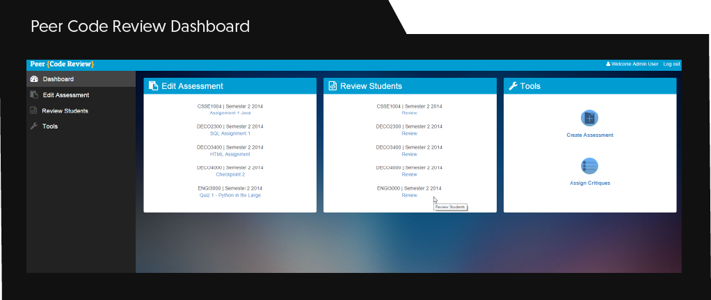

Education
-
University of Queensland - Bachelor of IT (Major in HCI/UX)
-
Kenmore State High School
Studied at UQ from 2012 -2016
Whilst studying at UQ I have completed individual projects, worked in a range of teams and even got to tutor some subjects for a time. Some of these projects are listed below on this very page. You can scroll down to see the works that i am most proud of.
My major in IT was towards Human-computer interaction. The subjects shaped me to the point that I ended up tutoring the capstone subjects for this major after my finishing year. Throughout my degree, I have learnt a vast amount about coding, designing, and teamwork. Here are some skills/tools I have practiced over the last few years:
Outside of studies, I made commitments to the UQ dance society. In which I have learnt many different Latin dance styles. Involvement with the club gave me an opportunity to take my experience with design into play. Here are some business card mock-ups that I created specifically for the club.
Work
-
University of Queensland Tutor
-
Information Technology Tutor [primary schools]
-
ATO - Australian tax office - Business developed applications TM
-
Liquorland - Salesmember
University of Queensland Tutor
From 2016 to 2018 I have been working as a tutor at the University of Queensland. At the uni, I have had the opportunity to work in design-focused Information Technology subjects with a large group of academics. Over these years I have taught in a range of subjects varying in difficulty from first to third year.
Here is an outline of what the courses involved and what I was tasked to do as a tutor.
Physical Computing [3rd Year]
A course designed around team-based design and construction of physical interactive environments/ Prototypes. The interactive product being the deviation away from computing standard input/output. Essentially creating an experience for the user might not have been placed in during usual computing tasks.
My duties included: Contact session feedback and assistance. Would include a variety of tasks including code debugging( c#), working with students in designing physical aspects of projects. Construction advice( LED wiring, soldering, servos, Arduino, Makey Makey, webcam/ Kinect, various hardware tools). Marking written and presentation based portions of assessment. Monitoring tools workshop, upholding safety standards assisting with onboarding students with clearance. Maintaining slack threads and posting informative information. Marking projects in an exhibit setting. Exhibit organisation of resources and setup.
Web Design [1st year]
A first-year subject which introduces students to the topic of designing websites and following appropriate practices which include: HTML, CSS, JavaScript coding and coding practices. User-centred design, Wireframes, Mockups, Style guides, Low Fidelity/High Fidelity prototyping, User research/ Testing
My duties included: Invigilate exams/ marking Running HTML/ CSS/ JavaScript workshops Attending meeting for input towards workshop any learning materials Facilitating class-wide discussion and overseeing weekly presentations in tutorials. On the spot marking and feedback. With the addition of detailed written responses for projects for both coding submissions and academic papers.
Design Studio 1 [1st Year]
A first-year subject that furthers teaching in web design. Moving towards team-based practices.
My duties included: Running contact sessions, often leading them with 1,2 tutors supporting from time to time. Running workshops solo: often technical skills involving JavaScript, basic PHP, API's. With some workshops focusing on graphic design and image/graphics optimisation within Adobe Illustrator/ Photoshop. Consultation on projects, debugging projects, looking at designs preliminary and final. Marking projects in an exhibit setting. Mockup exhibit organisation and setup.
Digital Prototyping [2nd year]
A second year subject to teach students prototyping techniques for generating a proof of concept using digital technologies.
My duties included: Running workshops for basic unity and C#. Workshops also included integration lessons with unity and Arduino/ Makey-Makey. Basic teachings of Arduino and node red. Debugging programs.
Robotics Instructor [HighSchool/ Primary Schools]
Running workshops for students coming into the university. Often based around lego EV3, App inventor or Design Thinking.
ATO
Working at the ATO was a great learning experience. I have worked within teams that span different offices in brisbane to produce business side application and services.
Throughout my time at the ATO I had the opportunity to work with people from across Australia to complete tasks.
Tasks at the ATO: Creating and automating forms, Connecting services to SharePoint, Deployment of software strategies.
Information Technology Tutor
Tutoring at schools outside of the university as a stand-alone or in group tutor.
Tasks included teaching both staff and students beginners programming. This would include knowledge in Ev3, scratch, ozobots, sphero programs and learning practices.
Some of the teachings are directed towards Brain Raiders events that happen every year. This event gives students a goal of creating something exciting with technology. This will be my 3rd year helping prepare students for this event.
LiquorLand
I worked at Liquorland for 4 years, in that time I have learnt a lot in the realm of sales and customer service. On top of this, my responsibilities fell into the realm of upkeep of store essentials and training of staff within the business. I have worked in small and large teams across multiple suburbs in Brisbane and have often successfully managed store processes on my own.
Primary responsibilities include Ordering/Maintaining/Receiving/Stocking store items. Training new staff with POS systems, money handling, store lockup, ordering, and safety. I would also carry out these tasks, with added support towards store paperwork stepping through audits if needed.
Past Projects
-
The Big Crew [Website for creatives]
-
Peer code review Uni (Capstone project)

-
Say Hello - Uni (physical computing project)
-
Rack City - Govhack
Peer Code Review
Peer Code Review was a capstone project for IT at UQ. This project was based around getting feedback about code to students. Students were able to review their peer's code on this platform upon upload. This website was built with teaching staff, students, and the schooling institutes in mind.
Moodle integration was a primary part of the system. Where either student or teaching staff were authenticated before logging in. Teaching staff had access to set up courses. In addition, they could either in succession or randomly assign students to partners or groups where code could be shared and reviewed.
Say Hello
Say hello was a final semester project in the physical computing course. The project aimed to increase interaction between employees in the workplace. The product itself was in the form of an interactive walkway. As people walk onto the walkway space images were projected to encapsulate each user. Once the users were located our system would draw connections to each other individual on the walkway. This would work for up to 6 people. If the persons on the walkway interacted in a certain way we would pick up certain natural movements and change the walkway accordingly possibly prompting more conversation or kickstarting that hello to someone new in the workplace. The walkway also had a mode where people within the floor could interact with games and even serve workplace memos.
This project was presented at the EDGE at Southbank as part of the physical computing exhibit hosted by UQ. My team and I have also showcased the project at UQ open day events.
Within this project, my sole role was to program parts of the functionality for the interactive floor. We used unity and the C# language to handle the walkway logic as a 2D game. A Microsoft Kinect was used to track the users and their position in real time, this was then displayed as a projection on the ground. The Kinect also gave us gesture information, which we captured and used to trigger events as people interacted with each other. Some examples of these interactions (hi five, closeness, shaking hands).
Rack City
Rack city was a fun GovHack project aimed at directing people towards Brisbane city cycle stations and the nearest local cultural landmarks. This idea received an honorable mention at the national GovHack awards.
My role in the creation of the web app was mainly data manipulation and setup for incentives. The goal was to give people points and statistics for landmarks and distance travelled using the application.
You can check out our pitch video here.
Personal Work
I have been working on some website mockups and designs for daily challenges. You can check it out on behance below
In my spare time I learn about, and create 3D models. I focus on realism but want to branch out and create high-quality low-poly items in future. I am most proud of the bladerunner movie prop device as I had no help from tutorials and used only reference photos to achieve the look. If you want to check out my design process and how the renders came to be you can look at art station above or the gallery below.


 ×
×
Render Doughnut tutorial, with added coffee cup and water
simulation Click
here to see how I created it
×
One of my first renders in blender. Wanted to achieve a
realistic grassy field. Click here to see how I created it